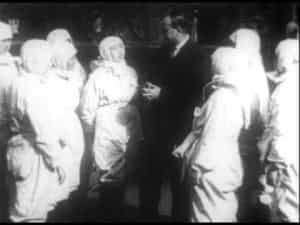

Quintus can be found at qcurtius.com. He is the author of the books On Duties, Thirty Seven, Sallust: The Conspiracy Of Catiline And The War Of Jugurtha, and other books. His work has been reviewed at Taki's Magazine. He can be followed on Twitter


Recent news reports from the Korean peninsula claim that in January over one million propaganda leaflets were sent into South Korea by North Korea. The barrage of leaflets, all sent by balloon, come in the wake of Pyongyang’s renewed nuclear tests in that month.
It is a strange way of waging a propaganda war. We commonly hear of propaganda leaflets traveling from South to North, but almost never the other way around. What could North Korea possibly entice people in the South with? How could a country that can barely feed itself hope to influence popular opinion in another country?
Here are examples of some of the leaflets used by the North in the past. The show a revolting image of an American soldier torturing a woman, and an absurd image presumably showing what a great life defectors in the North enjoy.

North Korean propaganda leaflet showing the alleged joys awaiting those who defect to the North.
Ridiculous North Korean propaganda showing US soldiers torturing civilians.
While such images may seem amusing to people far removed from the field of conflict, we should not forget that such propaganda, repeated over and over, can have an effect over time. It is a depressing truth that even the most ridiculous nonsense repeated endlessly can do some damage.
Consider, for example, the “germ warfare” allegations against the United States during the Korean War. This was a nasty episode that took shape towards the end of the conflict, and it still occasionally resonates today. It is a revealing episode, and shows how biased journalists can willingly participate in propaganda lies.
During February and March of 1952, China and North Korea accused the United States of having waged a “germ warfare” campaign all over the peninsula. Specifically, they alleged that the US had aerially dropped canisters containing a number of disease vectors, such as flies, spiders, feathers, and marine organisms. Anthrax, cholera, and encephalitis were supposedly caused by such vectors. A leftist Australian journalist, Wilfred Burchett claimed to have witnessed such weapons being used.
As “proof” of such claims, the communists wheeled out prisoners of war who mumbled “confessions” of having participated in such “campaigns.” The United States denied the charges completely, as they were patently absurd to anyone with a rudimentary knowledge of military affairs and the progress of the conflict.
The Red Cross and the World Health Organization claimed that the communist allegations were false. This did not deter Peking and Pyongyang. They demanded another investigation, this time from a “neutral” observer, namely, the Soviet dominated World Peace Council. An “International Scientific Commission” was set up to look into the germ warfare claims.
Leftist scientists and journalists lent credence to the communist propaganda by participating in the charade. During the summer of 1952, the members of the International Scientific Commission traveled to North Korea and China to probe the germ warfare allegations.

Among these scientists was Dr. Joseph Needham, an admittedly brilliant Sinologist and scientist, yet one who proved incredibly soft-headed and gullible when dealing with politics. The conclusion of Needham’s commission—which exceeded 665 pages—was that the communist allegations of germ warfare were “true.”
The commission relied completely on the “evidence” presented to them by the communists. Such “evidence” took the form of piles of dead insects, hollow bomb canisters that had obviously been doctored, and the mendacious statements of civilian witnesses.
What was incredible was that a man of Needham’s intelligence was totally deceived by the Chinese and Korean propaganda. But Needham saw what he wanted to see. He was a long-time Chinese sympathizer, had a Chinese mistress in England, and was fascinated with Chinese culture. That the communists would deliberately lie to him never crossed his mind.
Leftist “journalists” like Tibor Meray, Wilfred Burchett, and others fanned the flames of the propaganda by repeating them over and over. In the jittery cold-war atmosphere of the time, such accusations might even seem plausible to the Western public, which had neither the time nor the ability to make heads or tails out of such matters.
No matter how much the United States denied the allegations, there were still people prepared to believe the worst. When Matthew Ridgway traveled to Europe to take over the command of NATO, he was greeted with massive protests screaming “Ridgway, Go Home!”
In retrospect, it seems clear that the Chinese and North Koreans seized on a few isolated examples of contagion to mount a huge propaganda offensive. Lack of adequate medical knowledge, food shortages, and improper sanitation were what caused any of the alleged diseases, rather than any deliberate military use.
Leftist journalist Wilfred Burchett
Despite the fact that the germ warfare claims were obvious lies, they were picked up and repeated by those in the West who found that such claims fit their political narrative. To such people, it was irrelevant whether the claims were true: what mattered was that they were useful.
In hindsight, it would have been better if the US government had immediately launched its own propaganda offensive to counteract the communist lies. Unfortunately, this was not done. The only way to counter malicious propaganda is to denounce it with the same vehemence with which it is put forth by its proponents.
The result was that some residual taint of the “germ warfare” allegation lingered in the air, at least on the communist side, even after the conflict had ended.
Read More: A New Kind Of Propaganda For The Culture War